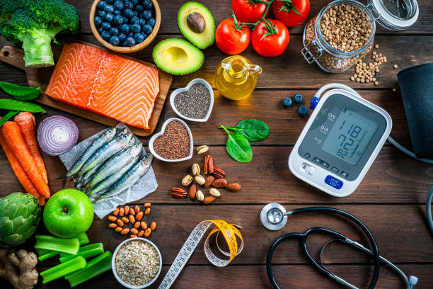

Benefits of Green Vegetables
“Health is a state of complete harmony of body, mind and soul. When one is free from physical disabilities and mental distractions, the gates of the soul open.” ~BKS Iyengar
It is often said that instead of eating less and exercising more, it is better to eat like your ancestors; that we need to look at our genetic and cultural history as we decide what to eat. Well, right now we are all struggling with things like weight management, recovery and health maintenance. All we look for is a glamorous way to stay fit, but what we don't imagine is the fact that there is no way we can achieve the desired health goals just by exercising heavily or doing yoga or being active to be in a particular sport. A vigorous diet is just as essential as a regular dynamic training session.
Now that we talk about nutrition, we don't just focus on reducing carbohydrates and fats, but more on the kind of nutrition we obtain from the different food sources. Two of the most important and beneficial sources of the "diet" discussed are fruits and vegetables. Among these, the ones that provide the greatest variety of nutrients and related benefits are the green vegetables. Yes that's right. Vegetables like kale, peas, spinach and the like are the ones that would provide the maximum needed benefit to your body. Let's take a look at the top 21 benefits that green vegetables can have for health:
Green vegetables: 21 amazing health benefits
Health benefits of green vegetables
Green vegetables are one of the highest plant protein sources available, providing all the essential amino acids that help build strength and muscle mass.
Green vegetables are a much cleaner food than animal proteins, which are acidic to the body, causing uric acid buildup and unhealthy cholesterol levels associated with cardiovascular disease.
These vegetables are a natural, plant-based multivitamin packed with vitamins A, C, K and folic acid, in addition to trace minerals, including good amounts of sulfur, potassium, calcium and iron.
Consuming green smoothies or green juices made from fresh green vegetables every morning is a healthier habit than consuming coffee or tea as it can help to get rid of the addiction to caffeine and other caffeinated products.
Green vegetables, used in and prepared as salads, serve as one of the best sources of dietary fiber that helps improve digestion and healthy bowel movements.
Green leafy vegetables are a rich source of omega-3 fatty acids (alpha-linoleic acid), which is considered the good fat that every body needs on a regular basis, as it is extremely essential for the brain and its neurological functions.
Omega-3's derived oils help reduce inflammation in various parts of the body, thus helping to counteract the effects of pro-inflammatory AA fatty acids.
Green vegetables, especially dark-leaved varieties, are exceptionally high in chlorophyll. This chlorophyll has a very close structure to that of human blood cells and is therefore beneficial in improving oxygen transport and increasing red blood cell production.
Green smoothies and juices help nourish and cleanse the blood and help purify the liver and lymphatic system of the body.
The greens are considered very helpful in removing and neutralizing toxins from the bloodstream that may have been ingested into the body through radiation or other pollutants.
As a side effect, daily consumption of green vegetables can help improve one's mood and relieve depression, leading to increased mental focus.
Regularly eating lots of green leafy vegetables can even help prevent dementia later in life.
Eating leafy green vegetables has been shown to be most effective in protecting against cognitive decline.
Green vegetables are seen to contain sufficient amounts of vitamin K, which has been found to not only improve brain activity but also improve psychomotor behavior, reflexes and overall cognition.
Green vegetables contain folic acid, which turns into folic acid when oxidized. This folic acid is considered extremely important for maintaining hemoglobin levels in the body and also helps to reduce depression and anxiety.
A large amount of vitamin B9 is found in green vegetables, which improves a person's concentration and memory ability.
Green leafy vegetables help to make the blood more alkaline, which in turn improves the calcium absorption process of the bones
The large amounts of vitamin K present in green vegetables produce a protein called 'osteocalcin' that helps improve bone density.
Presence of rich amounts of folic acid can greatly aid in ovulation and prevent birth effects.
Green vegetables have been found to play an important role in increasing iron levels in the body, which in turn increases the number of red blood cells.
Green vegetables contain a tremendous amount of antioxidants, vitamin A and collagen-boosting vitamin C that helps fight the effects of aging, reduce wrinkles and fine lines on the skin and help keep it looking healthy and radiant.
So, as we see, the health benefits of consuming green vegetables are not just limited to one body part or organ or area, but are actually numerous. As we know, health encompasses physical as well as mental and emotional well-being, so it remains not just a question of 'what it does' but more of 'what it all does'. Green vegetables seem to take care of every nook and corner of our body - from the ends of the hair to the toenails, which is about what a person looks for in a healthy food source. So no matter how bland or bitter they may taste, green vegetables are the ones that are sure to keep you in shape, without any side effects or side effects (unless, of course, you're allergic to one of these!). So - eat green, live clean!